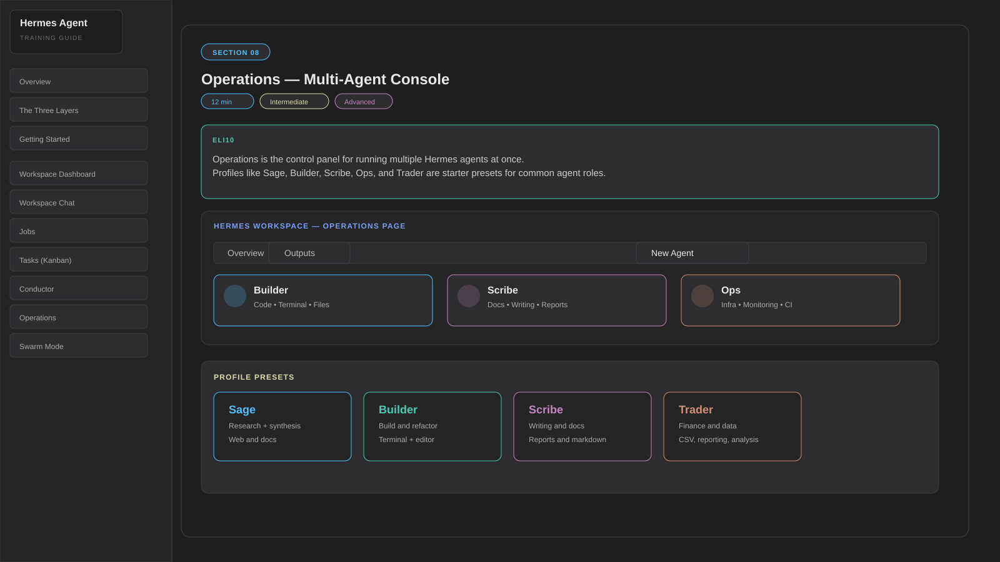

Operations — Multi-Agent Console
Operations is the control panel for running multiple Hermes agents at once. The named profiles — Sage, Builder, Scribe, Ops, Trader — are not special product tiers. They are built-in starter presets: saved default configurations that tune tools, skills, and behavior for common roles. You can use them as-is or create your own custom profile.
- Profile — a saved starting configuration for an agent (tools, model defaults, skills, behavior)
- Preset — one of the built-in starting profiles such as Sage / Builder / Scribe / Ops / Trader
- Overview tab — live grid of all running agents with status and activity
- Outputs tab — consolidated output from all agents
- New Agent — launch another agent from a selected profile or custom config
- "Needs setup" detection — flags profiles that aren't fully configured

Profile Presets Explained
🧠 Sage
Research and analysis. Optimized for web search, document reading, and synthesizing information. Best for: market research, competitive analysis, summarizing docs.
🔨 Builder
Code writing and engineering. Full tool access including terminal and file editing. Best for: feature development, debugging, refactoring.
✍️ Scribe
Writing and documentation. Optimized for long-form content, structured output, and markdown formatting. Best for: docs, reports, READMEs.
⚙️ Ops
Infrastructure and monitoring. Terminal-heavy, system-focused. Best for: deployments, log analysis, health checks.
📊 Trader
Data and financial analysis. Optimized for CSV/data processing and quantitative tasks. Best for: financial models, data pipelines, reporting.
You're managing a sprint (code + docs + infra changes) simultaneously. Launch a Builder for the code, a Scribe for the docs, and an Ops agent for the deployment scripts — all running at the same time, visible in the Operations grid.
Operations comes after Tasks and Conductor: Use Operations when you want to manually launch 2–3 agents with different profiles and watch them side by side. It is useful once the board lifecycle is familiar and you want more direct control.
Beginner combo: 1 Builder + 1 Scribe, both with short tasks. Intermediate: 3 agents with a shared sprint objective. Advanced: custom per-profile model config and parallel workstreams with tighter guardrails.
Live Setup — Step by Step
- Ensure
hermes gateway runis running (Operations uses the gateway for each agent) - Open Hermes Workspace → navigate to Operations
- Click New Agent — select a profile preset (e.g., Builder)
- Give the agent a task in the agent's chat input
- Repeat: click New Agent again, select Scribe, give it a docs task
- Watch both agents appear in the Overview grid with live status
- Switch to Outputs tab to see consolidated results from all agents
Task for the Builder agent:
Task for the Scribe agent (simultaneously):
Advanced: Per-Profile Model Configuration
Each Hermes profile can use a different LLM. This is configured through per-profile config files — there is no UI for this. If a profile has no model set, it inherits the global default from ~/.hermes/config.yaml.
✅ Leave at AUTO when:
- You have one primary account (e.g. Copilot)
- Cost isn't a concern for your workload
- You're still learning the system
- All profiles use the same provider
⚠️ Override per-profile when:
- Workers run many parallel tasks and cost adds up
- You want a cheaper/faster model for simple agents
- You want a stronger model for a specific profile (e.g. reviewer)
- You're running profiles across different providers
Each profile gets its own config directory. Create or edit the file to set that profile's model:
The dispatcher automatically injects the correct HERMES_HOME when spawning a profile, so each worker reads its own model settings in isolation.